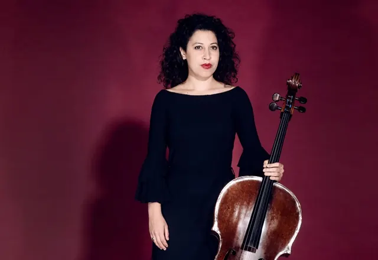

Nieuws ·
Stichting Kunst in het Kerkje presenteert een Uniek Bach Concert met Celliste Ella van Poucke

Stichting Kunst in het Kerkje is verheugd om een bijzonder concert aan te kondigen met de getalenteerde celliste Ella van Poucke. Het evenement zal plaatsvinden op zondag 28 januari 2024 in het pittoreske Vincentiuskerkje in Velp bij Grave. Ella van Poucke zal drie van Johann Sebastian Bachs speciaal voor cello solo gecomponeerde sonaten ten gehore brengen. Het concert start om 14.00 uur op het adres Pastoor Loefsweg 1 in Velp bij Grave. Vooraf reserveren wordt sterk aanbevolen en kan via hun website.
Een Virtuoos Repertoire: Bachs Sonaten 1, 4 en 6
Ella van Poucke, geboren in Amsterdam in 1994, is erkend als een van de vooraanstaande cellisten van haar generatie. Bekend om haar muzikale diepgang, indrukwekkende instrumentbeheersing en intense podiumuitstraling, heeft zij zich genesteld in de top van hedendaagse cellisten. Sinds haar debuut op 10-jarige leeftijd in het Concertgebouw heeft ze opgetreden in vooraanstaande concertzalen wereldwijd en is ze een graag geziene gast in diverse Nederlandse en internationale radio- en televisieprogramma’s.
In 2019 maakte Ella indruk met de complete werken voor cello en piano van Beethoven, uitgevoerd met haar broer Nicolas. Haar 2018 tour met alle Bachsuites en haar debuutalbum gewijd aan Schumanns cello-composities hebben internationale lof ontvangen. Ter gelegenheid van de 150e verjaardag van Sergei Rachmaninov in 2023, bereidt Ella een album voor dat zijn kamermuziek eert, met een focus op de sonate voor cello en piano.
Een Rijke Muzikale Achtergrond
Ella, afkomstig uit een muzikale familie, begon op zesjarige leeftijd met cello spelen en studeerde aan het Koninklijk Conservatorium in Den Haag en later aan het Conservatorium van Amsterdam. Ze is momenteel docent cello aan het Conservatorium van Amsterdam en speelt op een Maggini-cello uit 1620, beschikbaar gesteld door een anonieme weldoener.
Bezoek het Vincentiuskerkje voor dit Unieke Concert
Mis deze kans niet om Ella van Poucke te horen spelen in de intieme setting van het Vincentiuskerkje. Bezoekers kunnen zich verheugen op de 1ste, 4de en 6de sonate van Bach, uitgevoerd door deze uitzonderlijke artiest.
Voor meer informatie over dit concert en andere evenementen georganiseerd door Stichting Kunst in het Kerkje, ga naar www.kunstinhetkerkje.nl.